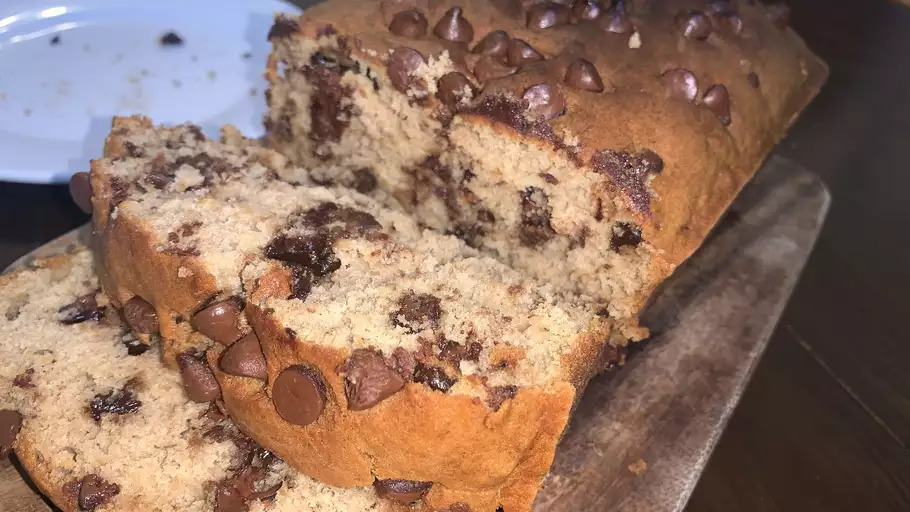

Banana Chocolate Chip Bread

Description
Ingredients
- 2 cups all-purpose flour
- 1 teaspoon baking soda
- q teaspoon baking powder
- 1 teaspoon salt
- 3 ripe bananas, mashed
- 1 tablespoon milk
- 1 teaspoon ground cinnamon, or to taste
- 1 cup white sugar
- 1/2 cup butter, softened
- 2 large eggs
- 1 cup semisweet chocolate chips
-
- Mix the dry ingredients in one bowl
- Mix the bananas, milk, and cinnamon in another bowl
- Beat the butter and sugar in a third bowl, adding the eggs one at a time.
-
- Stir the banana mixture into the butter mixture
- Mix in the flour mixture
- Fold in the chocolate chips.
-
- Pour the batter into a prepared loaf pan
- Bake in the preheated oven until a toothpick comes out clean.
- You can either serve now or wrap either individual slices or the whole bread in aluminum foil to put it in the freezer for future use.
Credits: All Recipes
Return to Top
Return to home page